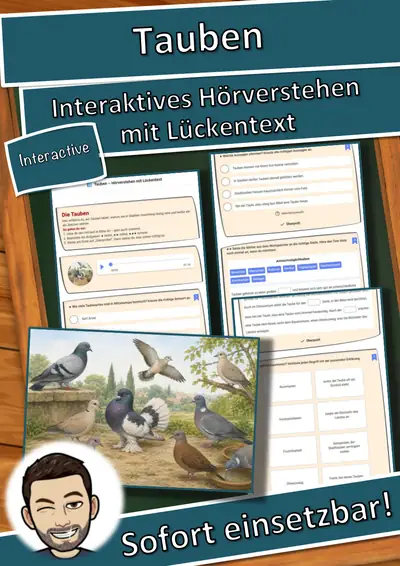

Lesespur: Ludwig van Beethoven: Musik gegen die Stille – Lesespurgeschichte mit Rätseln (Klasse 6)
Ludwig van Beethoven – Musik gegen die Stille – Lesespurgeschichte Musik (Klasse 6)Begib dich mit deiner Klasse auf eine spannende Lesespur zu einem Komponisten, der seine größten Werke schrieb, als er schon taub war! Selina und Tobias verbringen einen Projekttag im Beethoven-Haus in Bonn: Im Übezimmer erfahren sie vom strengen Unterricht des jungen Ludwig, am Reisekoffer von seinem Umzug nach Wien, am Salonflügel von seinem stürmischen Klavierspiel. In der Hörrohr-Vitrine geht es um seine Taubheit und die Gesprächshefte, im Klopfraum erklingt das berühmte Klopfmotiv der 5. Sinfonie, im Naturgarten zwitschern die Vögel der Pastorale, im Chorsaal ertönt die Ode an die Freude – heute die Hymne Europas. In der Klavierecke spielen alle selbst. Ihr Hörrohr Hörri ist immer dabei. Am Ende jedes Abschnitts verrät ein Hinweis den nächsten Ort auf dem Plan – nur wer genau liest, findet den Weg und sammelt alle geheimen Buchstaben zum Lösungswort.
Die perfekte Lesespur für den MUSIKUNTERRICHT der 6. Klasse – ideal zur Komponistenbegegnung und als Einstieg ins Werkhören: Sie verbindet sinnentnehmendes Lesen mit Lebensgeschichte, Werkkenntnis und einer berührenden Geschichte über Durchhaltevermögen. Das Material ist SOFORT EINSETZBAR und in DREI DIFFERENZIERUNGSSTUFEN (leicht ★ / mittel ★★ / schwer ★★★) angelegt.WICHTIG: Das komplette Material ist sowohl in FARBE als auch in SCHWARZ-WEISS enthalten – ideal zum Sparen von Druckkosten.DAS IST ENTHALTEN
- Lesespurgeschichte in 3 Niveaus (leicht, mittel, schwer)
- farbiger Plan als Suchkarte
- Hörverstehen mit QR-Code zur MP3 (selbstständiges Hören mit Kopfhörern)
- vier Aufträge auf dem Weg: ein Quiz, eine Werkzuordnung, eine Rechenaufgabe und ein Steckbrief
- Rätselseite (Wörter-Suchsel + Fragen)
- Ausmalbild zum Thema (Komponist am Flügel mit Blick in die Natur)
- ausführliches Lösungsblatt für die Lehrkraft
- alles zusätzlich als komplette Schwarz-Weiß-VarianteSO GEHT DIE LESESPURDie Schülerinnen und Schüler lesen ab START, finden im Text den nächsten Raum, suchen ihn auf dem Plan und lesen bei dieser Station weiter. An jeder richtigen Station gibt es einen Buchstaben. Eingebaute Sackgassen (Kasse, Garderobe, Treppe, Café) sind keine Stationen und dienen der Selbstkontrolle. Am Ende werden die gesammelten Buchstaben umgestellt und ergeben ein geheimes Lösungswort. (Die Lösungen sind selbstverständlich nur im Lösungsblatt für die Lehrkraft enthalten.)INHALTLICHER SCHWERPUNKTDie Schülerinnen und Schüler lernen Lebensstationen Ludwig van Beethovens kennen – Kindheit in Bonn, Leben in Wien, zunehmende Taubheit –, begegnen der 5. Sinfonie, der Pastorale, der 9. Sinfonie mit der Ode an die Freude und Für Elise und ordnen Beethoven zwischen Klassik und Romantik ein.ABGEDECKTER LEHRPLAN (Klasse 6, Musik)
- Musik (LehrplanPLUS Bayern) – Jahrgangsstufe 6 „Komponisten und ihre Zeit / Musik hören“: Leben und Werk eines Komponisten kennen, ausgewählte Werke hörend erschließen und einordnen.
- Deutsch – Lesen und mit Texten umgehen: Sachinformationen gezielt entnehmen; Zuhören: einem Sachhörtext konzentriert folgen (Hörverstehen mit MP3).
- Mathematik – Rechnen mit Jahreszahlen, Multiplikation.
- Fächerübergreifend / Kompetenzen: Geschichte (um 1800), Sozialkunde (Europa, Europahymne), Inklusion (Leben mit Hörbehinderung), genaues Lesen und Prüfen, kreatives Gestalten (Ausmalbild).
Geeignet für Freiarbeit, Stationenlernen, Vertretungsstunden, Wochenplan, Projekttage und Distanzunterricht. Klassenstufe 6.
Ähnliche Materialien

Ludwig van Beethoven Lückentext mit Wortspeicher Hörverstehen und Suchsel

Komponist Lückentext mit Wortspeicher Hörverstehen und Suchsel

Lesespur: Die Wiener Klassik: Haydn, Mozart, Beethoven – Lesespurgeschichte mit Rätseln (Klasse 8)

Ludwig der Vierzehnte Lückentext mit Wortspeicher Hörverstehen und Suchsel

Steckbriefe Komponisten – Materialpaket (12 Komponisten vom Barock bis zum Impressionismus, differenziert, mit Lösungen)

App gegen Corona - Homeschooling

Tauben – Hörverstehen mit Lückentext (interaktiv)